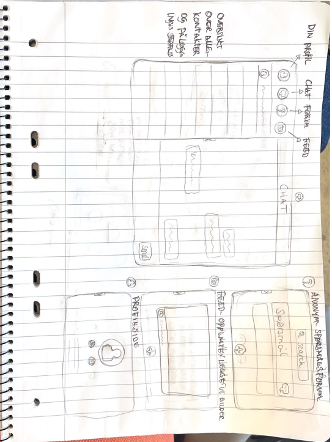

Early process
I started with in-depth interviews about work habits, workflow, and well-being. The data was transcribed, color-coded, and organized into an affinity diagram, which highlighted users’ needs for better social connection and support in their daily work.
Insights
- Need for low-barrier contact with colleagues
- Desire to share workday experiences informally
- Importance of asking questions without feeling intrusive

Outcome
I developed a high-fidelity prototype aiming to adress the needs of the users. The prototype focused on a PC app with four main functions: an anonymous Q&A page, chat, a social feed, and profile pages with a contact overview. The design was tested and evaluated, emphasizing simple navigation and social interaction.


Learnings
Through this project, I gained experience using HCI methods such as interviews, analysis, and prototyping to translate user needs into concrete design solutions. I learned the importance of turning insights into functionality that feels both intuitive and meaningful in daily use.